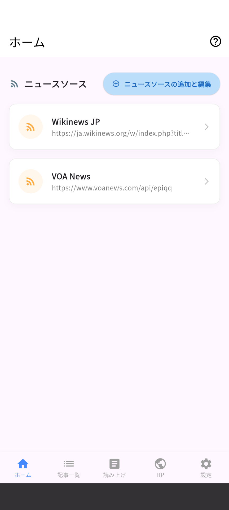
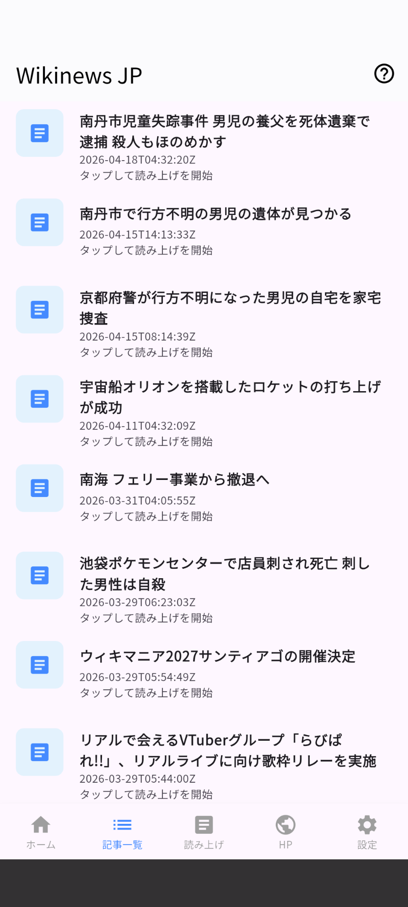
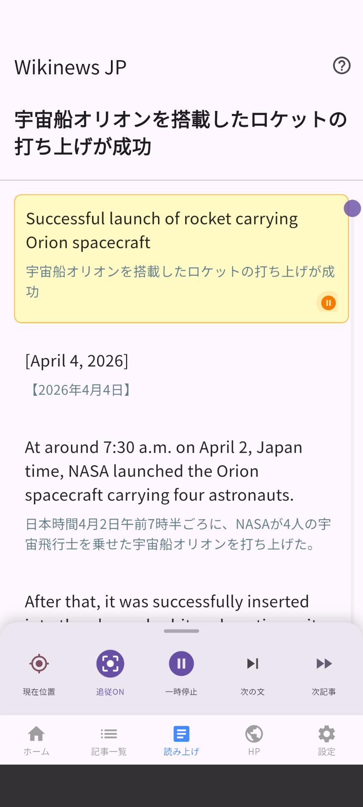
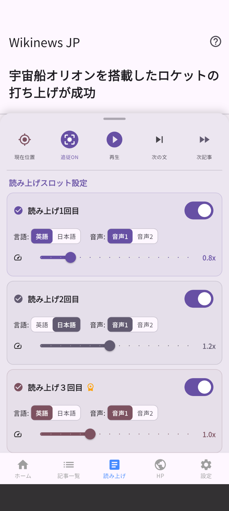
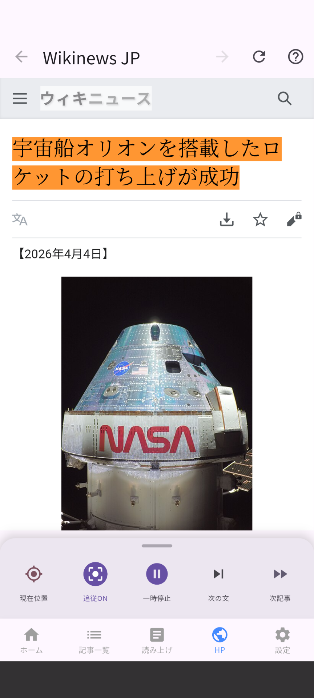
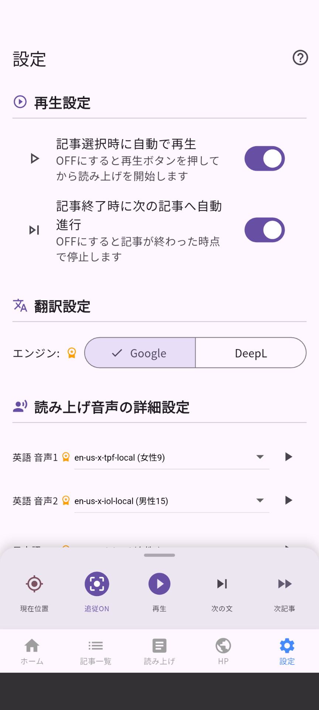
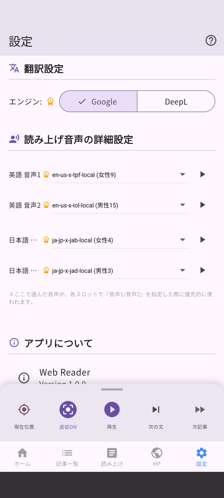

WebVoice の基本操作から詳細設定まで、画面ごとに解説します。
アプリは下部のタブバーで 5 つの画面を切り替えます。

登録済みのニュースソース（RSSフィード）が一覧表示されます。ソースをタップすると、そのサイトの記事一覧に移動します。

ホームで選択したソースの最新記事が一覧表示されます。


| 操作 | 動作 |
|---|---|
| ハイライト中のカードをタップ | 再生 / 一時停止 |
| 別のカードをタップ | そのカードから読み上げ開始 |
画面下部の操作バーで再生をコントロールできます。
| ボタン | 動作 |
|---|---|
| 現在位置 | 現在読み上げ中のカードまでスクロール |
| 追従 ON/OFF | 読み上げに合わせて画面を自動スクロール |
| 一時停止 / 再生 | 読み上げの開始・停止 |
| 次の文 | 次の段落へスキップ |
| 次記事 | 次の記事へ進む |
読み上げ画面を上にスワイプすると、スロット設定パネルが開きます。1つの段落を最大 3 回まで異なる設定で読み上げることができます。
| 設定項目 | 説明 |
|---|---|
| 言語 | 英語 / 日本語（翻訳）を選択 |
| 音声 | 音声1 / 音声2（設定画面で変更可） |
| 速度 | スライダーで再生速度を調整 |
| ON/OFF トグル | そのスロットをスキップ |

記事の元ウェブページを内蔵ブラウザで表示します。読み上げ中の段落がページ上でハイライト（黄色）され、現在の読み上げ位置を視覚的に確認できます。


| 項目 | 説明 |
|---|---|
| 記事選択時に自動で再生 | 記事をタップした瞬間に読み上げを開始します。OFFにすると再生ボタンを押すまで待機します。 |
| 記事終了時に次の記事へ自動進行 | 最後の段落まで読み終えると、次の記事へ自動的に進みます。 |
| エンジン | 説明 |
|---|---|
| Google（無料） | Google 翻訳を使用します。APIキー不要。 |
| DeepL | より自然な翻訳が可能。APIキーの設定が必要です。設定ガイド → |
英語・日本語それぞれ「音声1」「音声2」の 2 種類の音声を登録できます。ドロップダウンで音声を選び、▶ ボタンで試聴してから設定してください。ここで選んだ音声が、各スロットの「音声1/音声2」指定に反映されます。
設定画面の下部から、このユーザーガイドやサポートページへアクセスできます。各タブの右上の ?（ヘルプ）ボタン からも同様にアクセスできます。